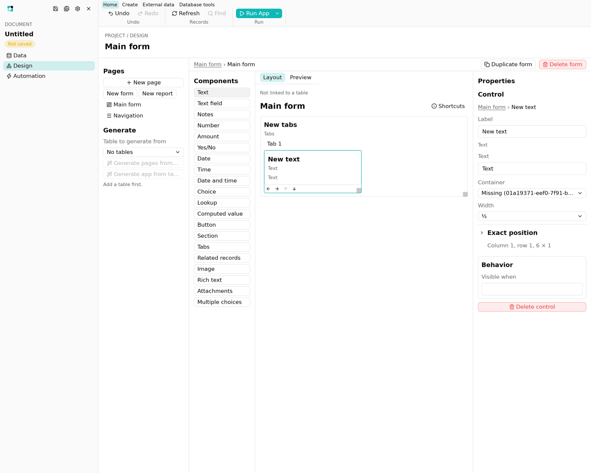
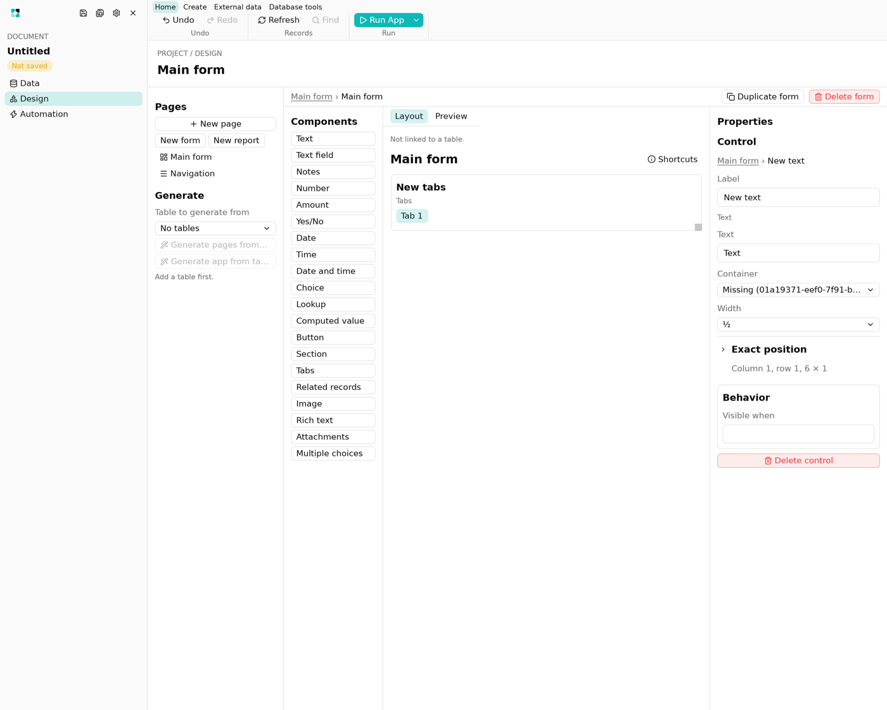

1. A control added after its tab page is removed or undone is orphaned
- Repro
- Add Tabs → click Tab 2 → select the tab group → Remove tab 2 → add Label. A second path: Add tab → click Tab 3 → Undo → select the group → add Text.
- Result
- The control is stored with
parent.tabset to a page that no longer exists. The designer draws it on a phantom page, with no tab highlighted, until you click a real tab. After that it is on no canvas, and the Runtime never shows it. The Container picker showsMissing (01a19371-…), a raw UUID. - Cause
DesignStudio.active_tabsis never pruned.target_containertrusts it, andstructural()does not check thatparent.tabexists.


B fixes the cause and the phantom render. Add C's Problems check later for documents that already contain orphans.